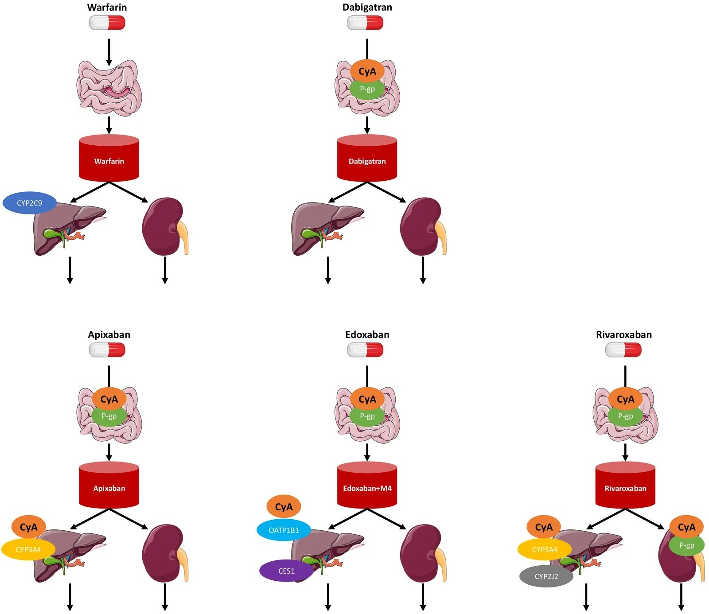
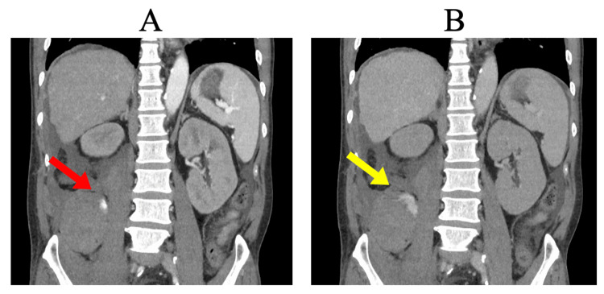
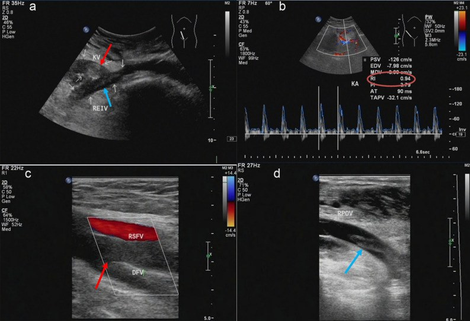

118 — Kháng đông đường uống ở người ghép tạng dùng ức chế calcineurin: chọn DOAC hay kháng vitamin K, theo dõi và xử trí quanh thủ thuật hình ảnh
Tags: pattern:huyet-khoi pattern:chay-mau pattern:tuong-tac-thuoc vung:than vung:gan vung:manh-ghep protocol:sieu-am-Doppler protocol:CTA-bung protocol:anti-Xa score:CHADS-VASc
Mức chắc chắn (certainty): tổng hợp y văn (literature synthesis) — tổng quan tương tác dược động học DOAC–CNI có bảng liều và số AUC (Biomedicines 2026, PMC13509657); khuyến cáo thực hành ERBP/ERA–ESOT 2026 về kháng đông ở người nhận ghép thận (Nephrol Dial Transplant 2026, PMC13518092); đoàn hệ 79 bệnh nhân dùng apixaban sau ghép tạng bụng (Adv Hematol 2026, PMC13504357); ca chảy máu sau sinh thiết thận có CT 2 thì và can thiệp nút mạch (Cureus 2025, PMC12076264); ca huyết khối tĩnh mạch thận ghép có Doppler + CT + DSA (Sci Rep 2023, PMC10570330). Không có thử nghiệm ngẫu nhiên nào so sánh DOAC với kháng vitamin K riêng ở người ghép tạng.
Câu chốt: Người ghép tạng dùng ức chế calcineurin (calcineurin inhibitor, CNI) — tacrolimus, cyclosporine, voclosporin — có hai lý do cùng lúc để kháng đông sai: (1) CNI ức chế P-glycoprotein/CYP3A4 làm tăng nồng độ DOAC; (2) CNI gây độc thận và tăng huyết áp làm tăng nguy cơ chảy máu. Ba câu hỏi trước mọi quyết định: thuốc nào (P-gp phụ thuộc bao nhiêu)? chức năng thận hiện tại (CrCl)? và lần chụp/can thiệp tới là bao giờ? Sai lầm hay gặp: dùng INR để "kiểm tra" DOAC (vô nghĩa), và ngừng DOAC mà không có phương án thay thế — huyết khối mảnh ghép tụy xảy ra tới 35%.
1. Tổng quan bệnh học – cơ chế hình ảnh
1.1 Vì sao CNI làm thay đổi nồng độ DOAC
- Tacrolimus và cyclosporine đều là cơ chất của CYP3A4/5 và P-glycoprotein (P-gp). Tacrolimus ức chế CYP3A4 yếu (ít ý nghĩa lâm sàng) nhưng cyclosporine ức chế P-gp mạnh hơn — đây là trục tương tác chính.
- Niêm mạc ruột là nơi tương tác mạnh nhất với edoxaban và dabigatran: nồng độ cyclosporine trong lòng ruột cao hơn nhiều so với nồng độ trong máu (tính theo liều/250 mL dịch ruột) → ức chế P-gp tại chỗ làm tăng hấp thu.
- Hệ quả kép ở người ghép: CNI gây co mạch đến và độc ống thận → giảm mức lọc cầu thận; nhiều DOAC thải qua thận (dabigatran ~85%), nên giảm thanh thải + tăng hấp thu cùng lúc.
1.2 Số liệu dược động học định lượng
| Cặp tương tác | Thay đổi nồng độ (AUC) | Nguồn |
|---|---|---|
| Apixaban 10 mg + cyclosporine 100 mg | GMR 119% — trong biên an toàn, không cần chỉnh liều | PMC13509657 |
| Apixaban 10 mg + tacrolimus 5 mg | GMR 77% (giảm) — vẫn trong biên | PMC13509657 |
| Apixaban ở người ghép phổi/thận (so người không ghép) | 4.312 vs 1.511 ng·h/mL (cùng tacrolimus); 5.388 vs 2.356 ng·h/mL (cùng cyclosporine); CLcr nhóm ghép 54 mL/phút | PMC13509657 |
| Edoxaban + cyclosporine 500 mg | Phơi nhiễm ~×2; chất chuyển hóa M4: AUC ×6,9 | PMC13509657 |
| Rivaroxaban 20 mg + cyclosporine (± fluconazole 400 mg) | Tăng AUC rõ rệt do giảm bài tiết ống thận qua P-gp; ở người ghép gan: nồng độ đáy 131,7 vs 20,3 ng/mL (cyclosporine vs tacrolimus, p = 0,014) | PMC13509657 |
| Dabigatran + cyclosporine | Không có nghiên cứu lâm sàng; không khuyến cáo ở châu Âu; mô hình P-gp (verapamil 120 mg) làm AUC +143% | PMC13509657 |
| Warfarin + CNI | Ít tương tác dược động học (chuyển hóa qua CYP2C9, không qua P-gp) | PMC13509657 |
1.3 Nguy cơ huyết khối của chính mảnh ghép (bối cảnh quyết định)
- Huyết khối mảnh ghép: tụy 10–35%, gan 2–9%, thận 0,1–4,2%; nguy cơ cao nhất trong 6 tháng đầu (trạng thái tăng đông sau ghép).
- Vì vậy "ngừng kháng đông cho an toàn" có thể đánh đổi bằng mất mảnh ghép — quyết định phải cá thể hóa theo loại ghép và chỉ số đông máu.
2. Mẫu hình + chẩn đoán phân biệt (gamut)
2.1 Gamut theo "huyết khối hay chảy máu" trên hình ảnh
- Huyết khối tĩnh mạch mảnh ghép thận: siêu âm Doppler là tuyến đầu — mất phổ tĩnh mạch, lòng tĩnh mạch giảm âm không đều (huyết khối), chỉ số trở kháng động mạch (RI) tăng (ca minh họa RI 0,94 so với nền); CT có thể thấy thận ghép to, mật độ vỏ không đều, vùng giảm tưới máu.
- Huyết khối động mạch mảnh ghép: Doppler mất phổ động mạch, "parvus–tardus"; CTA là chuẩn xác định vị trí và độ dài.
- Huyết khối tĩnh mạch cửa / động mạch gan sau ghép gan: Doppler cửa PSV thấp, mất pha dao động; CTA 3 thì.
- Chảy máu sau sinh thiết/can thiết: CT không cản quang thấy máu tụ; CTA thì động mạch (40 giây) thấy thoát cản quang hoạt động; thì muộn (100 giây) thấy cản quang tồn tại/lan rộng — dấu hiệu đang chảy (ca PMC12076264: nguồn từ động mạch thắt lưng phải, nút mạch thành công).
2.2 Gamut theo nguyên nhân "mảnh ghép xấu đi" (để không quy oan cho thuốc)
- Huyết khối mạch (trên) · thải ghép cấp (thận to, tăng tín hiệu T2 vỏ, RI tăng) · độc thận do CNI (RI tăng nhẹ, không huyết khối) · hẹp miệng nối động mạch (chênh áp, jet) · tắc nghẽn niệu quản (ứ nước, phổ động mạch RI cao do áp lực ngược) · nhiễm trùng mảnh ghép/áp-xe.
- Chảy máu do thuốc không có hình ảnh đặc hiệu — chẩn đoán bằng vị trí + thì cản quang + diễn tiến, và bằng xét nghiệm đông máu phù hợp với từng thuốc.
3. Bảng so sánh phân biệt (ma trận đối chiếu)
| Thực thể (entity) | Hình ảnh/đặc điểm điển hình | Chốt vào (rule-in) | Chốt loại (rule-out) | Gợi ý xác nhận |
|---|---|---|---|---|
| Warfarin + CNI | Không phụ thuộc P-gp; hiệu ứng đo bằng INR | Cần theo dõi INR, nhiều tương tác qua CYP2C9 | INR bình thường không loại trừ tác dụng của DOAC khác | INR + xem lại danh sách thuốc |
| Apixaban + CNI | Tương tác nhẹ nhất trong nhóm ức chế Xa; GMR 119% (CsA) / 77% (Tac) | Ưu tiên khi eGFR thấp, có kinh nghiệm nhiều nhất ở người ghép | Vẫn tăng AUC ở người ghép phổi/thận (4.312 vs 1.511) | Anti-Xa hiệu chuẩn apixaban khi cần |
| Rivaroxaban + CNI | Tăng AUC mạnh khi có cyclosporine (± azole); đáy 131,7 vs 20,3 ng/mL (CsA vs Tac ở ghép gan) | Tránh phối hợp cyclosporine + fluconazole | Liều thấp không "an toàn" nếu chức năng thận giảm | Anti-Xa hiệu chuẩn rivaroxaban |
| Edoxaban + CNI | Phơi nhiễm ×2, M4 ×6,9 với cyclosporine | Giảm liều 30 mg khi CLcr 30–50, < 60 kg, hoặc dùng P-gp inhibitor | "60 mg là liều chuẩn" sai ở nhóm đủ tiêu chí giảm liều | Kiểm tra 3 tiêu chí giảm liều trước kê |
| Dabigatran + CNI | 85% thải qua thận; không có dữ liệu với cyclosporine | Tránh ở CKD nặng và khi dùng cyclosporine | Không dùng dTT để loại trừ nếu đã quá 24 giờ | dTT (dilute thrombin time) định tính |
| Huyết khối tĩnh mạch mảnh ghép thận | Lòng TM giảm âm không đều, mất phổ TM, RI 0,94 | Mất phổ tĩnh mạch + RI tăng + thận to | RI tăng đơn thuần không chốt (gặp cả trong tắc niệu quản) | Doppler lặp + CTA/CTV |
| Chảy máu hoạt động sau sinh thiết | Thoát cản quang thì động mạch, tồn tại thì muộn | Cản quang ngoài lòng mạch, tăng kích thước giữa 2 thì | Máu tụ đông đặc không ngấm = đã cầm | CTA 2–3 thì; DSA nút mạch |

Sơ đồ dược động học: warfarin qua CYP2C9 (không qua P-gp) so với dabigatran, apixaban, edoxaban (+M4) và rivaroxaban — các DOAC đều bị cyclosporine (CyA) ức chế P-gp tại ruột, riêng apixaban/rivaroxaban thêm CYP3A4 ở gan. Nguồn: PMC13509657, CC BY 4.0.3.1 Chọn thuốc trong 4 tình huống thường gặp
| Tình huống | Lựa chọn hợp lý | Lý do |
|---|---|---|
| Rung nhĩ, eGFR < 30, đang dùng tacrolimus | Apixaban (liều theo tuổi/cân nặng/creatinine) | Kinh nghiệm nhiều nhất, FDA đã phê duyệt cho GFR < 15 và lọc máu |
| Đang dùng cyclosporine + cần kháng đông | Warfarin hoặc apixaban; tránh rivaroxaban + azole | CsA ức chế P-gp mạnh; rivaroxaban tăng AUC rõ khi có thêm fluconazole |
| Huyết khối tĩnh mạch mảnh ghép thận cấp | Kháng đông toàn thân sớm; cân nhắc can thiệp lấy huyết khối | Nguy cơ mất mảnh ghép cao; ca PMC10570330 dùng hút huyết khối + nong bóng |
| Chuẩn bị sinh thiết mảnh ghép | Hoãn nếu được; nếu cấp thiết, ngừng theo loại thuốc + kiểm tra anti-Xa/dTT | Chảy máu nặng sau sinh thiết 0,3–12,6% |
4. Protocol + hệ phân độ
4.1 Trước khi khởi trị
- Xét nghiệm nền: công thức máu, creatinine/eGFR (đặc biệt người ghép thận), men gan, tiền sử chảy máu (tiêu hóa, nội sọ), cân nặng.
- TDM tacrolimus/cyclosporine là bắt buộc — tương tác hai chiều: DOAC ít ảnh hưởng CNI, nhưng thay đổi CNI làm đổi mức ức chế P-gp.
- Không dùng INR để theo dõi DOAC; với warfarin, INR mục tiêu 2–3 (van tim cơ học: theo khuyến cáo riêng).
4.2 Quanh thủ thuật hình ảnh (theo ERBP 2026 và chuỗi sinh thiết lớn)
| Tình huống | Khuyến cáo | Nguồn |
|---|---|---|
| Ghép thận hiến sống chương trình | Ngừng kháng kết tập tiểu cầu (trừ aspirin) 5 ngày; warfarin 5 ngày, cầu nối khi cần | PMC13518092 |
| DOAC trước ghép | Không khuyến cáo trừ khi có chuyên gia và có thuốc đảo ngược; thường chuyển sang warfarin | PMC13518092 |
| Sinh thiết mảnh ghép thận | Chảy máu nặng sau sinh thiết 1,6% (khoảng 0,3–12,6%); loạt > 2.500 ca ngừng kháng đông/kháng kết tập 7 ngày | PMC13518092 |
| Apixaban ở thời điểm ghép | Mất máu 100–1.600 mL, có ca tổn thương mạch máu lớn cần mổ lại → tránh dùng ngay lúc ghép | PMC13518092 |
| Can thiệp ít xâm lấn (chọc hút/dẫn lưu) | Cá thể hóa theo CrCl và thuốc; không có ngưỡng chung — quyết định theo khoa can thiệp | tổng hợp |
4.3 Protocol hình ảnh khi nghi chảy máu
flowchart TD
A[Nghi chay mau sau thu thuat o nguoi dung CNI + khang dong] --> B[CT khong can quang: vi tri mau tu, khoi luong]
B --> C{Benh nhan khong on dinh hoac Hb giam?}
C -->|Co| D[CTA bung 3 thi: dong mach 40 giay, tinh mach 70 giay, muon 100 giay]
C -->|Khong| E[Theo doi + xet nghiem dong mau theo thuoc]
D --> F{Thoat can quang hoat dong?}
F -->|Co| G[DSA nut mach]
F -->|Khong| H[Mau tu dong dac: theo doi, khong can thiet phai can thiep]
G --> I[Kiem tra anti-Xa hoac dTT, dieu chinh thuoc sau thu thuat]
4.4 Theo dõi hiệu quả và an toàn
| Thuốc | Xét nghiệm phù hợp | Lưu ý |
|---|---|---|
| Apixaban / rivaroxaban | Anti-Xa hiệu chuẩn theo từng thuốc | Không dùng chung ngưỡng với heparin; chỉ định khi cấp cứu/chảy máu |
| Edoxaban | Anti-Xa hiệu chuẩn edoxaban | Kiểm tra 3 tiêu chí giảm liều trước kê |
| Dabigatran | dTT (định tính), aPTT chỉ định hướng | 85% thải qua thận → theo dõi CrCl |
| Warfarin | INR | Tương tác qua CYP2C9, nhiều thuốc |
5. Biến thể bình thường và cạm bẫy
- INR bình thường không loại trừ tác dụng DOAC — INR chỉ nhạy với warfarin; dùng INR để "kiểm tra apixaban" là bẫy chết người trước khi chọc mạch lớn.
- Anti-Xa không dùng lẫn: mỗi thuốc cần hiệu chuẩn riêng; kết quả "bình thường" theo hiệu chuẩn heparin không nói gì về apixaban.
- Phù do hội chứng thận nhiễm mỡ làm giảm AUC toàn phần nhưng KHÔNG đổi AUC dạng tự do → không chỉnh liều theo mức phù; ngược lại, giảm albumin có thể làm tăng phần thuốc tự do.
- Tacrolimus "an toàn hơn" không có nghĩa là không cần theo dõi: ức chế P-gp yếu hơn nhưng vẫn bắt buộc TDM vì tương tác qua CYP3A4 và độc thận.
- RI tăng đơn thuần không chốt huyết khối tĩnh mạch — phải thấy mất phổ tĩnh mạch; tắc niệu quản, thải ghép, chèn ép cũng làm RI tăng.
- Ngừng kháng đông "cho chắc" trước thủ thuật nhỏ có thể gây huyết khối mảnh ghép tụy (10–35%) — luôn có kế hoạch thay thế và thời điểm dùng lại.
- Giai đoạn quanh ghép: apixaban dùng sát lúc ghép gây mất máu 100–1.600 mL và can thiệp lại — không phải "DOAC nào cũng tiện".
6. Tự lượng giá — Blind Quiz
Ca 1 — Nam 56 tuổi, ghép thận 3 tuần, đang dùng tacrolimus + apixaban vì huyết khối tĩnh mạch sâu; đau hông lưng đột ngột, Hb giảm 2 g/dL.

- Câu hỏi: Dấu hiệu nào chứng minh đang chảy máu? Vì sao phải chụp hai thì? Bước tiếp theo?
Bấm để hiện đáp án (findings + chẩn đoán)
- Findings: (A) thì động mạch 40 giây: thoát cản quang từ động mạch thắt lưng phải (mũi tên đỏ); (B) thì muộn 100 giây: cản quang tồn tại và lan rộng trong khoang sau phúc mạc (mũi tên vàng).
- Chẩn đoán: chảy máu sau phúc mạc hoạt động sau sinh thiết thận — không phải máu tụ đông đặc.
- Vì sao: máu tụ đông đặc không ngấm và không tăng giữa 2 thì; cản quang tồn tại ở thì muộn = dòng chảy đang tiếp diễn → cần DSA nút mạch (ca gốc đã nút thành công).
- Nguồn ảnh: Isa K et al, Cureus 2025, Fig. 2 — PMC12076264, CC BY 4.0.
Ca 2 — Nữ 47 tuổi, ghép thận 5 ngày, thiểu niệu, creatinin tăng; siêu âm Doppler mảnh ghép.

- Câu hỏi: Phổ Doppler bất thường ở đâu? RI 0,94 nói lên điều gì? Cần làm gì tiếp?
Bấm để hiện đáp án (findings + chẩn đoán)
- Findings: (a) tĩnh mạch thận ghép giãn, lòng giảm âm không đều (huyết khối, mũi tên đỏ) lan ra tĩnh mạch chậu ngoài; (b) không có phổ tĩnh mạch, động mạch thận RI 0,94 (cao hơn nền).
- Chẩn đoán: huyết khối tĩnh mạch mảnh ghép thận — RI cao là hệ quả của ứ máu, không phải nguyên nhân.
- Vì sao: mất phổ tĩnh mạch là dấu hiệu quyết định; RI đơn thuần không đặc hiệu (tắc niệu quản, thải ghép cũng tăng).
- Xử trí: kháng đông/can thiệp lấy huyết khối sớm (ca gốc hút huyết khối + nong bóng) để cứu mảnh ghép.
- Nguồn ảnh: Wu SJ et al, Sci Rep 2023, Fig. 1 — PMC10570330, CC BY 4.0.
Ca 3 — Nam 63 tuổi, ghép tim–thận, rung nhĩ; đang dùng cyclosporine. Bác sĩ hỏi: "Kê rivaroxaban 20 mg được không?"
- Câu hỏi: Vì sao rivaroxaban là lựa chọn kém ở ca này? Nếu buộc phải dùng, cần kiểm tra gì?
Bấm để hiện đáp án (findings + chẩn đoán)
- Trả lời: rivaroxaban bị ức chế P-gp tại ruột/thận + CYP3A4 ở gan; khi phối hợp cyclosporine (và càng nặng nếu thêm fluconazole) → AUC tăng mạnh; việc phối hợp ức chế đồng thời P-gp và CYP3A4 làm phơi nhiễm tăng mạnh và nên tránh.
- Nếu buộc phải dùng: kiểm tra CrCl, cân nhắc apixaban (kinh nghiệm ghép nhiều nhất) hoặc warfarin; theo dõi anti-Xa hiệu chuẩn rivaroxaban nếu có.
- Vì sao: đây là tương tác dược động học, không phải "dị ứng thuốc" — đổi liều không bù được việc mất kiểm soát nồng độ.
- Nguồn ảnh: Hirai T & Katayama K, Biomedicines 2026, Fig. 2 — PMC13509657, CC BY 4.0.
Bài liên quan chéo
- 100 – Tổng quan hệ Bụng
- 117 – Tương tác thuốc & theo dõi tacrolimus — trục P-gp/CYP3A4 của tacrolimus
- 116 – Nhiễm trùng nang gan ở người ghép thận
- 133 – Hẹp miệng nối & cholangiopathy thiếu máu sau ghép gan
- 3011 – Biến chứng niệu quản sau ghép thận
- 172 – Theo dõi & biến chứng sau can thiệp bóc tách ĐMC bụng
Không dùng để chẩn đoán độc lập khi chưa có người hướng dẫn.